| Mål | Verdi |
|---|---|
| Rader i analysefil | 357 |
| Unike kommuner | 357 |
| Kommuner med svarstatus Ja | 271 |
Kommunens forvaltning av folkehelseloven 2026
Nasjonale resultater fra undersøkelsen
1 Sammendrag
Rapporten viser hovedsakelig nasjonale resultater. Én kommune er analyseenheten. For hvert spørsmål oppgis antall og prosent. Filterspørsmål får et eksplisitt beregningsgrunnlag. Resultatene beskriver kommunene som svarte på undersøkelsen, ikke nødvendigvis alle landets kommuner.
1.1 Datadekning og svarstatus
1.1.1 Svarstatus
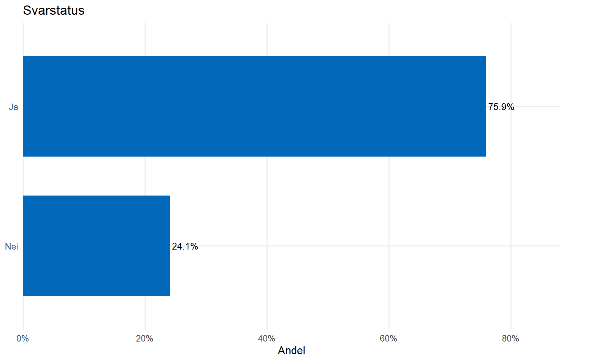
| Svar | n | Prosent |
|---|---|---|
| Ja | 271 | 75.9 % |
| Nei | 86 | 24.1 % |
Grunnlag: n = 357 gyldige svar.
[1] 4916486 [1] 5627400 [1] 87,36692
|landsdel | Inviterte| Svar| Prosent|
|:-----------------|---------:|----:|-------:|
|Agder og Rogaland | 48| 38| 79.2 %|
|Vestlandet | 70| 56| 80.0 %|
|Nord-Norge | 80| 51| 63.8 %|
|Oslo og Akershus | 22| 21| 95.5 %|
|Østlandet ellers | 99| 75| 75.8 %|
|Trøndelag | 38| 30| 78.9 %|
|fylke | Inviterte| Svar| Prosent|
|:--------------------------------|---------:|----:|-------:|
|Rogaland | 23| 18| 78.3 %|
|Møre og Romsdal | 27| 21| 77.8 %|
|Nordland - Nordlánnda | 41| 28| 68.3 %|
|Oslo - Oslove | 1| 1| 100.0 %|
|Østfold | 12| 8| 66.7 %|
|Akershus | 21| 20| 95.2 %|
|Buskerud | 18| 15| 83.3 %|
|Innlandet | 46| 36| 78.3 %|
|Vestfold | 6| 4| 66.7 %|
|Telemark | 17| 12| 70.6 %|
|Agder | 25| 20| 80.0 %|
|Vestland | 43| 35| 81.4 %|
|Trøndelag - Trööndelage | 38| 30| 78.9 %|
|Troms - Romsa - Tromssa | 21| 13| 61.9 %|
|Finnmark - Finnmárku - Finmarkku | 18| 10| 55.6 %|OBS. Hvis datasettet bare inneholder kommuner som svarte, kan svarprosent ikke beregnes uten en egen fil med alle inviterte kommuner.
2 Om respondentene
2.0.1 Organisatorisk plassering av den som har fylt ut skjemaet
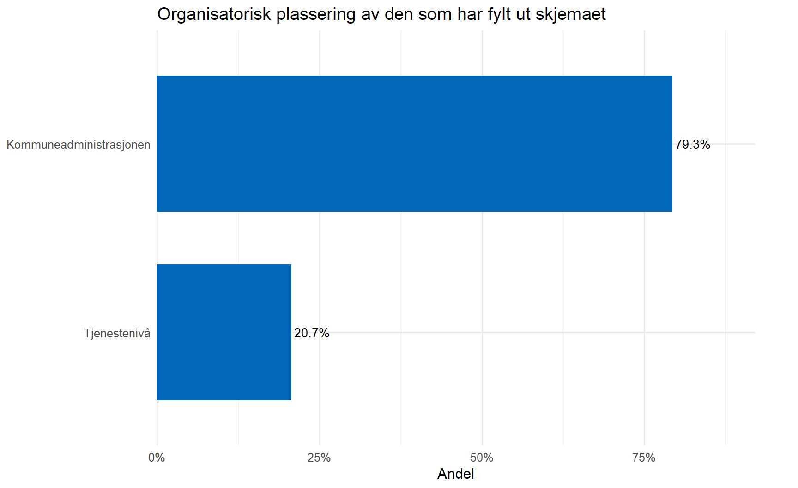
| Svar | n | Prosent |
|---|---|---|
| Kommuneadministrasjonen | 215 | 79.3 % |
| Tjenestenivå | 56 | 20.7 % |
Grunnlag: n = 271 gyldige svar.
Warning in single_table(v, labels, filter): Ukjente koder i variabel s_2:
Rådgiver/saksbehandler, Toppleder, Tjenesteyter, Kommune(over-)lege,
Mellomleder, Annet2.0.2 Tittel
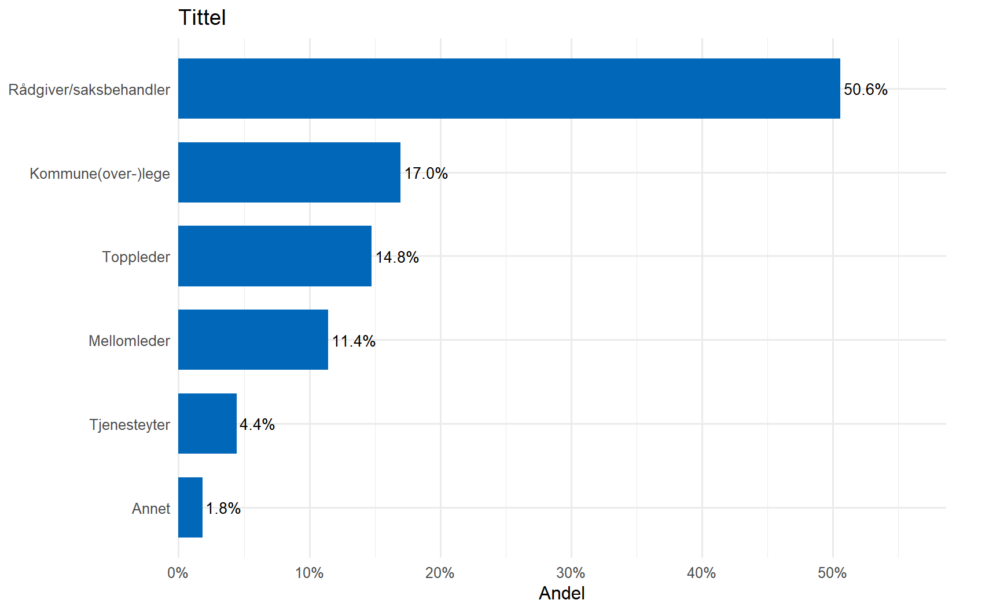
| Svar | n | Prosent |
|---|---|---|
| Rådgiver/saksbehandler | 137 | 50.6 % |
| Kommune(over-)lege | 46 | 17.0 % |
| Toppleder | 40 | 14.8 % |
| Mellomleder | 31 | 11.4 % |
| Tjenesteyter | 12 | 4.4 % |
| Annet | 5 | 1.8 % |
Grunnlag: n = 271 gyldige svar.
Warning in single_table(v, labels, filter): Ukjente koder i variabel s_3:
Helse, omsorg og velferd, Plan, areal, næring og samferdsel, Sektorovergripende
avdeling/stab, Kultur, idrett og frivillighet, Oppvekst og utdanning, Annet2.0.3 Sektortilknytning
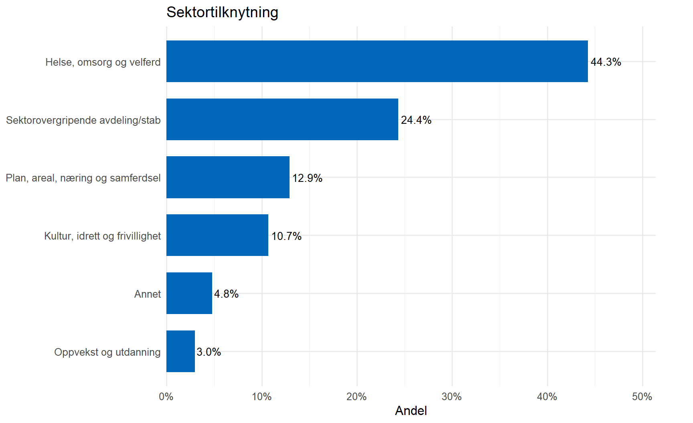
| Svar | n | Prosent |
|---|---|---|
| Helse, omsorg og velferd | 120 | 44.3 % |
| Sektorovergripende avdeling/stab | 66 | 24.4 % |
| Plan, areal, næring og samferdsel | 35 | 12.9 % |
| Kultur, idrett og frivillighet | 29 | 10.7 % |
| Annet | 13 | 4.8 % |
| Oppvekst og utdanning | 8 | 3.0 % |
Grunnlag: n = 271 gyldige svar. # Ivaretar kommunen kravet til oversikt over helsetilstanden i kommunen og faktorer som påvirker denne?
2.0.4 1a. Ivaretar kommunen kravet til oversikt over helsetilstanden i kommunen og faktorer som påvirker denne?
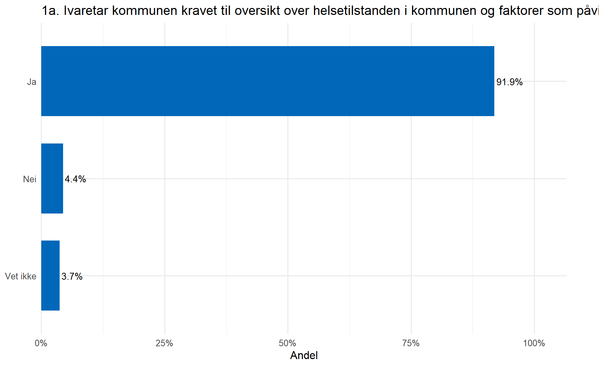
| Svar | n | Prosent |
|---|---|---|
| Ja | 249 | 91.9 % |
| Nei | 12 | 4.4 % |
| Vet ikke | 10 | 3.7 % |
Grunnlag: n = 271 gyldige svar.
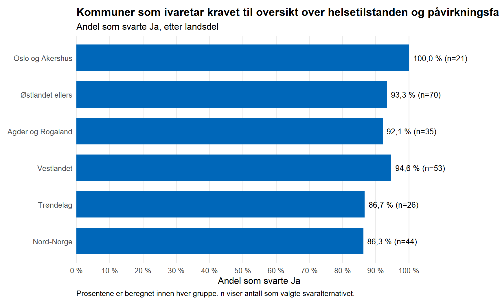
| landsdel | Svar | Antall kommuner | Prosent | Gyldige svar i gruppen |
|---|---|---|---|---|
| Oslo og Akershus | Ja | 21 | 100,0 % | 21 |
| Oslo og Akershus | Nei | 0 | 0,0 % | 21 |
| Oslo og Akershus | Vet ikke | 0 | 0,0 % | 21 |
| Østlandet ellers | Ja | 70 | 93,3 % | 75 |
| Østlandet ellers | Nei | 3 | 4,0 % | 75 |
| Østlandet ellers | Vet ikke | 2 | 2,7 % | 75 |
| Agder og Rogaland | Ja | 35 | 92,1 % | 38 |
| Agder og Rogaland | Nei | 2 | 5,3 % | 38 |
| Agder og Rogaland | Vet ikke | 1 | 2,6 % | 38 |
| Vestlandet | Ja | 53 | 94,6 % | 56 |
| Vestlandet | Nei | 1 | 1,8 % | 56 |
| Vestlandet | Vet ikke | 2 | 3,6 % | 56 |
| Trøndelag | Ja | 26 | 86,7 % | 30 |
| Trøndelag | Nei | 3 | 10,0 % | 30 |
| Trøndelag | Vet ikke | 1 | 3,3 % | 30 |
| Nord-Norge | Ja | 44 | 86,3 % | 51 |
| Nord-Norge | Nei | 3 | 5,9 % | 51 |
| Nord-Norge | Vet ikke | 4 | 7,8 % | 51 |
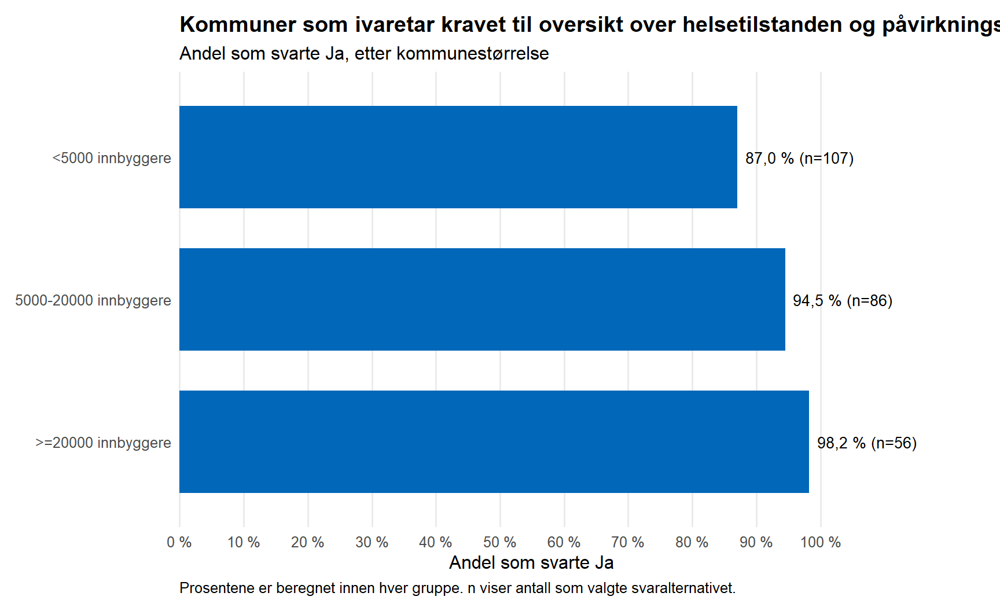
| liten | Svar | Antall kommuner | Prosent | Gyldige svar i gruppen |
|---|---|---|---|---|
| <5000 innbyggere | Ja | 107 | 87,0 % | 123 |
| <5000 innbyggere | Nei | 8 | 6,5 % | 123 |
| <5000 innbyggere | Vet ikke | 8 | 6,5 % | 123 |
| 5000-20000 innbyggere | Ja | 86 | 94,5 % | 91 |
| 5000-20000 innbyggere | Nei | 3 | 3,3 % | 91 |
| 5000-20000 innbyggere | Vet ikke | 2 | 2,2 % | 91 |
| >=20000 innbyggere | Ja | 56 | 98,2 % | 57 |
| >=20000 innbyggere | Nei | 1 | 1,8 % | 57 |
| >=20000 innbyggere | Vet ikke | 0 | 0,0 % | 57 |
3 Oversikt over helsetilstand og påvirkningsfaktorer
Warning in single_table(v = "q16", labels = q16_labels): Ukjente koder i
variabel q16: 2024, 2023, 2026, 2022, 2025, 2021, Under utarbeidelse nå, 2019,
Har ikke utarbeidet et slikt dokument, 2020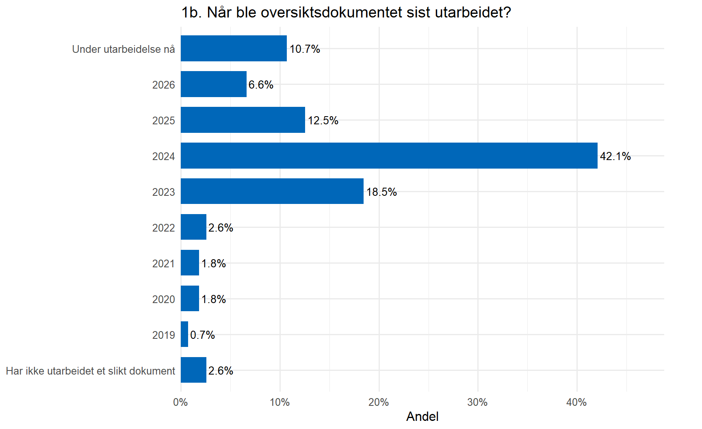
| Svar | n | Prosent |
|---|---|---|
| Under utarbeidelse nå | 29 | 10.7 % |
| 2026 | 18 | 6.6 % |
| 2025 | 34 | 12.5 % |
| 2024 | 114 | 42.1 % |
| 2023 | 50 | 18.5 % |
| 2022 | 7 | 2.6 % |
| 2021 | 5 | 1.8 % |
| 2020 | 5 | 1.8 % |
| 2019 | 2 | 0.7 % |
| Har ikke utarbeidet et slikt dokument | 7 | 2.6 % |
3.1 Deler av kommunen som er involvert
Bare kommuner med svaralternativ 1 til 9 på spørsmål 1b inngår.
Registered S3 method overwritten by 'quantmod':
method from
as.zoo.data.frame zoo | Del av kommunen | Antall kommuner |
|---|---|
| Helse og omsorg | 245 |
| Samfunnsmedisinsk | 221 |
| Kultur og frivillighet | 195 |
| Utdanning | 190 |
| Samfunn-/byutvikling | 173 |
| Plan og bygning | 169 |
| Barnehage | 164 |
| Velferd, arbeid og integrering | 145 |
| Miljø og klima | 105 |
| Miljøteknisk | 69 |
| Eiendom | 65 |
| Næring | 57 |
| Annet | 48 |
4 Interkommunalt samarbeid
4.0.1 3a. Samarbeider kommunen med andre kommuner?
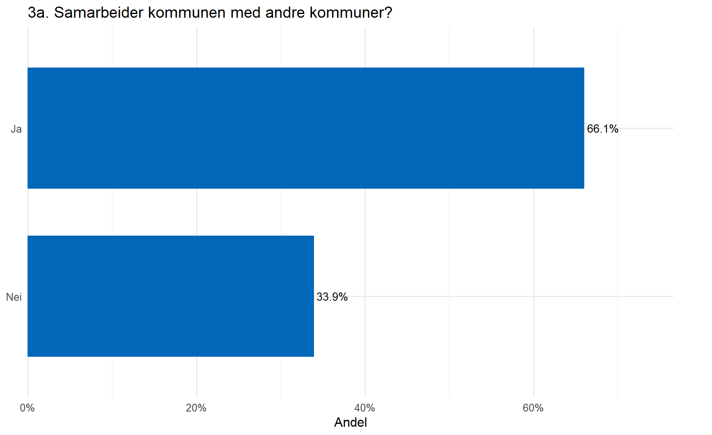
| Svar | n | Prosent |
|---|---|---|
| Ja | 179 | 66.1 % |
| Nei | 92 | 33.9 % |
Grunnlag: n = 271 gyldige svar.
| Samarbeider om | Antall kommuner |
|---|---|
| Folkehelsearbeid | 107 |
| Tilsyn | 83 |
| Beredskap | 101 |
| Kommuneoverlegefunksjonen | 81 |
| Samarbeidsområder (antall) | Antall kommuner |
|---|---|
| 1 | 65 |
| 2 | 55 |
| 3 | 39 |
| 4 | 20 |
4.1 Samarbeid etter kommunestørrelse og fylke
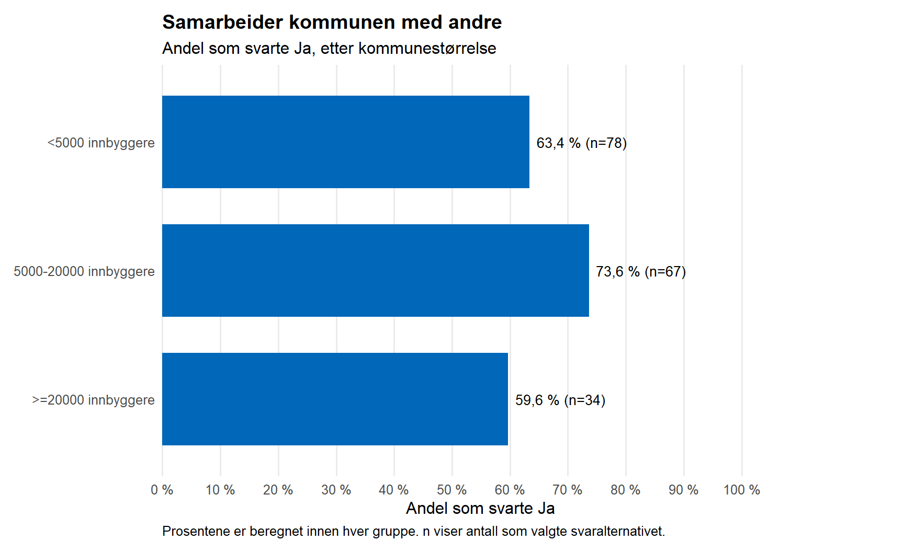
| liten | Svar | Antall kommuner | Prosent | Gyldige svar i gruppen |
|---|---|---|---|---|
| <5000 innbyggere | Ja | 78 | 63,4 % | 123 |
| <5000 innbyggere | Nei | 45 | 36,6 % | 123 |
| 5000-20000 innbyggere | Ja | 67 | 73,6 % | 91 |
| 5000-20000 innbyggere | Nei | 24 | 26,4 % | 91 |
| >=20000 innbyggere | Ja | 34 | 59,6 % | 57 |
| >=20000 innbyggere | Nei | 23 | 40,4 % | 57 |
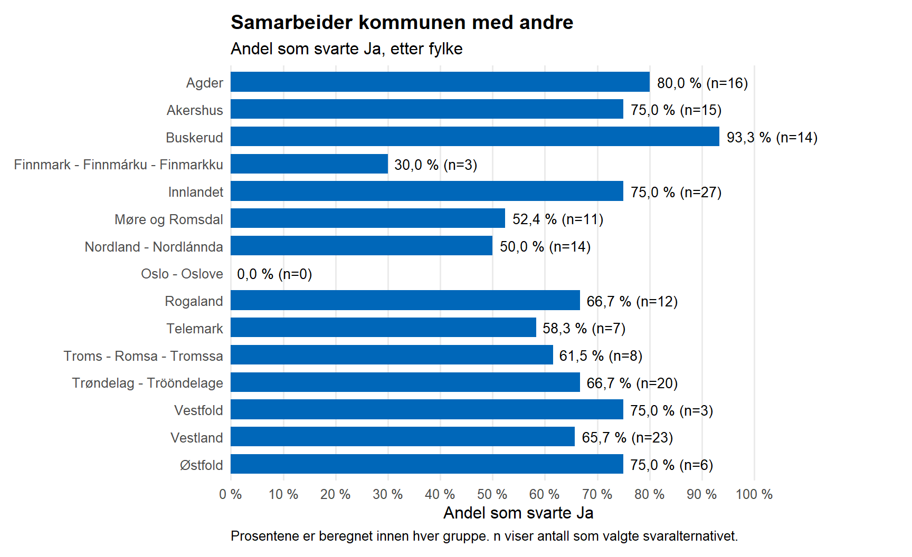
| fylke | Svar | Antall kommuner | Prosent | Gyldige svar i gruppen |
|---|---|---|---|---|
| Agder | Ja | 16 | 80,0 % | 20 |
| Agder | Nei | 4 | 20,0 % | 20 |
| Akershus | Ja | 15 | 75,0 % | 20 |
| Akershus | Nei | 5 | 25,0 % | 20 |
| Buskerud | Ja | 14 | 93,3 % | 15 |
| Buskerud | Nei | 1 | 6,7 % | 15 |
| Finnmark - Finnmárku - Finmarkku | Ja | 3 | 30,0 % | 10 |
| Finnmark - Finnmárku - Finmarkku | Nei | 7 | 70,0 % | 10 |
| Innlandet | Ja | 27 | 75,0 % | 36 |
| Innlandet | Nei | 9 | 25,0 % | 36 |
| Møre og Romsdal | Ja | 11 | 52,4 % | 21 |
| Møre og Romsdal | Nei | 10 | 47,6 % | 21 |
| Nordland - Nordlánnda | Ja | 14 | 50,0 % | 28 |
| Nordland - Nordlánnda | Nei | 14 | 50,0 % | 28 |
| Oslo - Oslove | Ja | 0 | 0,0 % | 1 |
| Oslo - Oslove | Nei | 1 | 100,0 % | 1 |
| Rogaland | Ja | 12 | 66,7 % | 18 |
| Rogaland | Nei | 6 | 33,3 % | 18 |
| Telemark | Ja | 7 | 58,3 % | 12 |
| Telemark | Nei | 5 | 41,7 % | 12 |
| Troms - Romsa - Tromssa | Ja | 8 | 61,5 % | 13 |
| Troms - Romsa - Tromssa | Nei | 5 | 38,5 % | 13 |
| Trøndelag - Trööndelage | Ja | 20 | 66,7 % | 30 |
| Trøndelag - Trööndelage | Nei | 10 | 33,3 % | 30 |
| Vestfold | Ja | 3 | 75,0 % | 4 |
| Vestfold | Nei | 1 | 25,0 % | 4 |
| Vestland | Ja | 23 | 65,7 % | 35 |
| Vestland | Nei | 12 | 34,3 % | 35 |
| Østfold | Ja | 6 | 75,0 % | 8 |
| Østfold | Nei | 2 | 25,0 % | 8 |
5 Største folkehelseutfordringer og prioriterte tiltak
| Hovedutfordringer | Antall kommuner |
|---|---|
| Psykisk helse og livskvalitet | 156 |
| Aldring av befolkningen | 153 |
| Utenforskap/ensomhet | 136 |
| Befolkningssammensetning | 98 |
| Sosioøkonomiske forskjeller | 95 |
| Sosial ulikhet i helse | 75 |
| Fysisk helse | 59 |
| Fysisk aktivitet | 50 |
| Tilknytning til arbeidsliv | 49 |
| Levekår | 47 |
| Skole/utdanning | 43 |
| Bolig | 29 |
| Ernæring/kosthold | 27 |
| Sosial støtte/deltagelse/mestring | 20 |
| Rusmiddelbruk | 17 |
| Opphoping av levekårsutfordringer | 16 |
| Andre tema | 15 |
| Fritidstilbud | 14 |
| Nærmiljø | 13 |
| Ikke identifisert eller ikke prioritert tiltak | 10 |
| Klima og miljø | 10 |
| Tobakksbruk | 7 |
| Ulykker | 2 |
| Barnehage | 1 |
| Skader | 1 |
| Prioriterte tiltak | Antall kommuner |
|---|---|
| Psykisk helse og livskvalitet | 151 |
| Utenforskap/ensomhet | 125 |
| Aldring av befolkningen | 116 |
| Fritidstilbud | 61 |
| Skole/utdanning | 61 |
| Fysisk aktivitet | 58 |
| Sosial støtte/deltagelse/mestring | 57 |
| Sosioøkonomiske forskjeller | 53 |
| Befolkningssammensetning | 48 |
| Tilknytning til arbeidsliv | 47 |
| Sosial ulikhet i helse | 38 |
| Bolig | 32 |
| Ernæring/kosthold | 27 |
| Barnehage | 24 |
| Fysisk helse | 24 |
| Ikke identifisert eller ikke prioritert tiltak | 22 |
| Opphoping av levekårsutfordringer | 22 |
| Levekår | 21 |
| Nærmiljø | 20 |
| Rusmiddelbruk | 19 |
| Klima og miljø | 10 |
| Andre tema | 6 |
| Tobakksbruk | 5 |
| Ulykker | 5 |
| Skader | 1 |
6 Planstrategi og planer
6.0.1 5. Er hovedutfordringene drøftet i kommunal planstrategi?
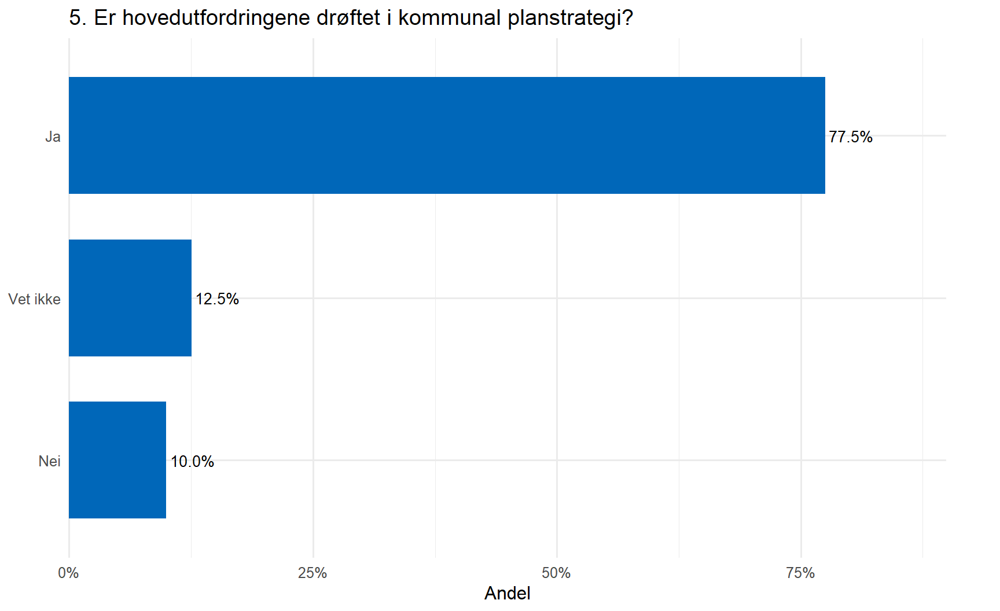
| Svar | n | Prosent |
|---|---|---|
| Ja | 210 | 77.5 % |
| Vet ikke | 34 | 12.5 % |
| Nei | 27 | 10.0 % |
Grunnlag: n = 271 gyldige svar.
6.0.2 6. Har utfordringene påvirket prioritering eller utarbeiding av planer?
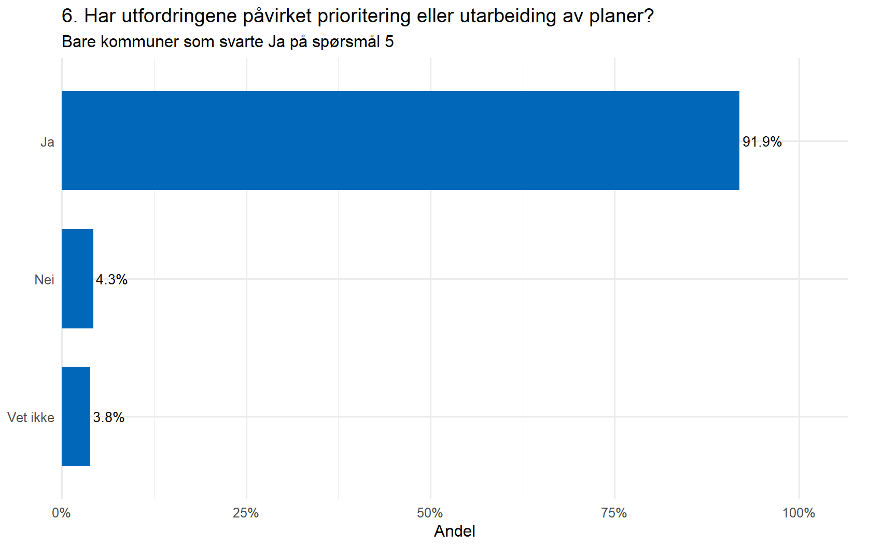
| Svar | n | Prosent |
|---|---|---|
| Ja | 193 | 91.9 % |
| Nei | 9 | 4.3 % |
| Vet ikke | 8 | 3.8 % |
Grunnlag: n = 210 gyldige svar.
6.1 Er hovedutfordringene drøftet i kommunal planstrategi? Etter landsdel og kommunestørrelse
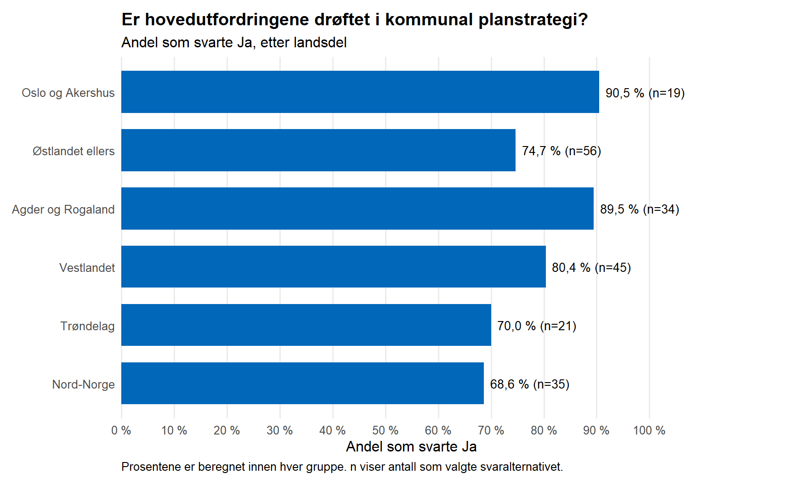
| landsdel | Svar | Antall kommuner | Prosent | Gyldige svar i gruppen |
|---|---|---|---|---|
| Oslo og Akershus | Ja | 19 | 90,5 % | 21 |
| Oslo og Akershus | Nei | 1 | 4,8 % | 21 |
| Oslo og Akershus | Vet ikke | 1 | 4,8 % | 21 |
| Østlandet ellers | Ja | 56 | 74,7 % | 75 |
| Østlandet ellers | Nei | 6 | 8,0 % | 75 |
| Østlandet ellers | Vet ikke | 13 | 17,3 % | 75 |
| Agder og Rogaland | Ja | 34 | 89,5 % | 38 |
| Agder og Rogaland | Nei | 1 | 2,6 % | 38 |
| Agder og Rogaland | Vet ikke | 3 | 7,9 % | 38 |
| Vestlandet | Ja | 45 | 80,4 % | 56 |
| Vestlandet | Nei | 6 | 10,7 % | 56 |
| Vestlandet | Vet ikke | 5 | 8,9 % | 56 |
| Trøndelag | Ja | 21 | 70,0 % | 30 |
| Trøndelag | Nei | 6 | 20,0 % | 30 |
| Trøndelag | Vet ikke | 3 | 10,0 % | 30 |
| Nord-Norge | Ja | 35 | 68,6 % | 51 |
| Nord-Norge | Nei | 7 | 13,7 % | 51 |
| Nord-Norge | Vet ikke | 9 | 17,6 % | 51 |
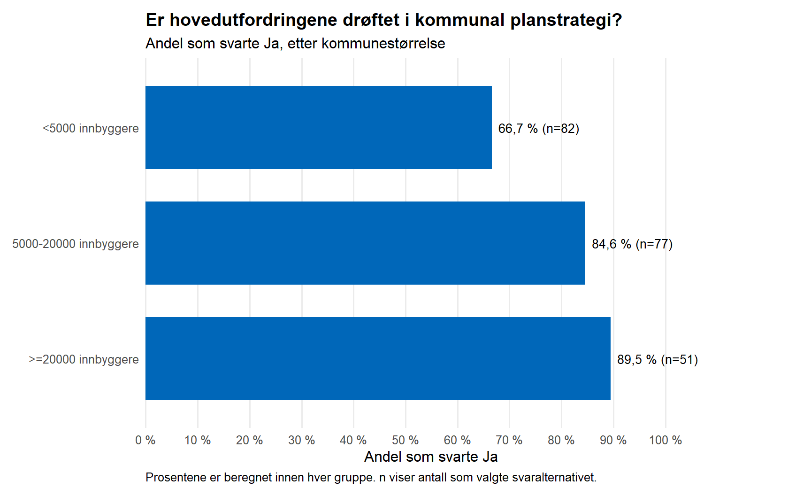
| liten | Svar | Antall kommuner | Prosent | Gyldige svar i gruppen |
|---|---|---|---|---|
| <5000 innbyggere | Ja | 82 | 66,7 % | 123 |
| <5000 innbyggere | Nei | 14 | 11,4 % | 123 |
| <5000 innbyggere | Vet ikke | 27 | 22,0 % | 123 |
| 5000-20000 innbyggere | Ja | 77 | 84,6 % | 91 |
| 5000-20000 innbyggere | Nei | 8 | 8,8 % | 91 |
| 5000-20000 innbyggere | Vet ikke | 6 | 6,6 % | 91 |
| >=20000 innbyggere | Ja | 51 | 89,5 % | 57 |
| >=20000 innbyggere | Nei | 5 | 8,8 % | 57 |
| >=20000 innbyggere | Vet ikke | 1 | 1,8 % | 57 |
6.2 Planer hvor kommunen har fastsatt mål og strategier som svar på folkehelseutfordringene
| Plan / strategi | Antall kommuner |
|---|---|
| Kommuneplanens samfunnsdel | 233 |
| Planer innen helse/sosial | 159 |
| Planer for oppvekst | 152 |
| Økonomiplan/handlingsprogram | 114 |
| Kommuneplanens arealdel | 100 |
| Planer for kultur | 92 |
| Forebyggende plan i barnevernsloven | 89 |
| Alkoholpolitisk handlingsplan | 84 |
| Planer for frivillighet | 82 |
| Planer for by-/nærmiljø-/arealutvikling | 60 |
| Egen plan for folkehelse | 57 |
| Planer for utdanning | 46 |
| Planer for miljø og klima | 35 |
| Andre temaområder | 29 |
| Planer for næringsutvikling | 18 |
| Ingen av disse | 7 |
7 Samiske folkehelseutfordringer
7.0.1 7a. Oppmerksomhet på særskilte folkehelseutfordringer i den samiske befolkningen
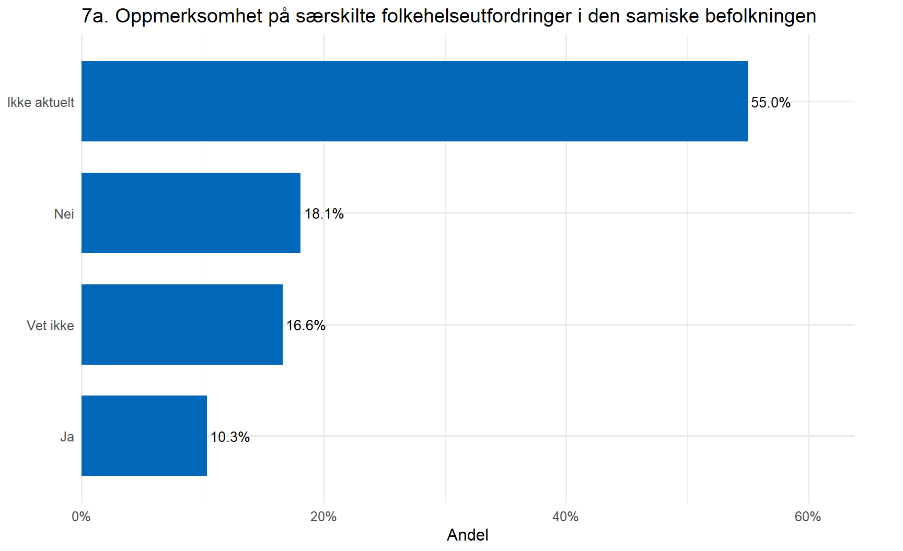
| Svar | n | Prosent |
|---|---|---|
| Ikke aktuelt | 149 | 55.0 % |
| Nei | 49 | 18.1 % |
| Vet ikke | 45 | 16.6 % |
| Ja | 28 | 10.3 % |
Grunnlag: n = 271 gyldige svar.
[1] “Alstahaug” “Bardu” “Berlevåg”
[4] “Bindal” “Bø” “Flatanger”
[7] “Frosta” “Frøya” “Gildeskål”
[10] “Hadsel” “Harstad - Hárstták” “Heim”
[13] “Herøy (Nordland)” “Karlsøy” “Leirfjord”
[16] “Lierne” “Lurøy” “Lyngen - Ivgu - Yykeä” [19] “Malvik” “Melhus” “Meløy”
[22] “Meråker” “Midtre Gauldal” “Moskenes”
[25] “Måsøy” “Nærøysund” “Orkland”
[28] “Overhalla” “Rindal” “Røst”
[31] “Saltdal” “Steigen” “Steinkjer - Stïentje” [34] “Sømna” “Sørfold - Fuolldá” “Vefsn”
Antall utfylte fritekstsvar blant kommuner i filteret: 28.
Rå fritekst bør ikke publiseres ukritisk. Konkrete beskrivelser kan identifisere kommune eller enkeltperson.
7.1 Kommunenenes oppmerksomhet på særskilte folkehelseutfordringer i den samiske befolkningen
Antall kommuner som svarte Nei: 49
| Kommune |
|---|
| Askvoll |
| Bærum |
| Eigersund |
| Gildeskål |
| Grimstad |
| Grue |
| Hadsel |
| Hamar |
| Harstad - Hárstták |
| Karlsøy |
| Kragerø |
| Kvinnherad |
| Leirfjord |
| Lierne |
| Lurøy |
| Lyngen - Ivgu - Yykeä |
| Løten |
| Malvik |
| Marker |
| Masfjorden |
| Melhus |
| Meløy |
| Meråker |
| Modum |
| Moskenes |
| Moss |
| Nes |
| Nittedal |
| Nærøysund |
| Os |
| Overhalla |
| Rakkestad |
| Ringerike |
| Ringsaker |
| Risør |
| Rollag |
| Saltdal |
| Skiptvet |
| Smøla |
| Steinkjer - Stïentje |
| Strand |
| Sunndal |
| Sømna |
| Sør-Odal |
| Sørfold - Fuolldá |
| Tvedestrand |
| Vefsn |
| Ål |
| Øygarden |
8 Evaluering, læring og forbedring
8.0.1 9a. Har kommunen gjennomgått og vurdert folkehelsearbeidet i fireårsperioden?
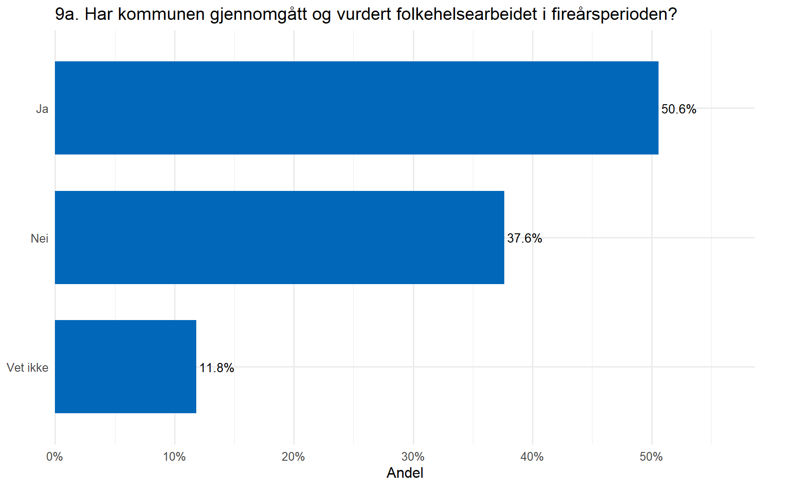
| Svar | n | Prosent |
|---|---|---|
| Ja | 137 | 50.6 % |
| Nei | 102 | 37.6 % |
| Vet ikke | 32 | 11.8 % |
Grunnlag: n = 271 gyldige svar.
| Fritekst | Variabel | n |
|---|---|---|
| 9b. Forbedringsområder | q21b | 119 |
| 9c. Bruk av erfaringer i neste fireårssyklus | q21b_1 | 108 |
Fritekstsvar bør kodes tematisk i en separat, dokumentert analyse. Rapportér temaer med antall kommuner og anonymiser eventuelle sitater.
8.1 Etter landsdel og kommunestørrelse
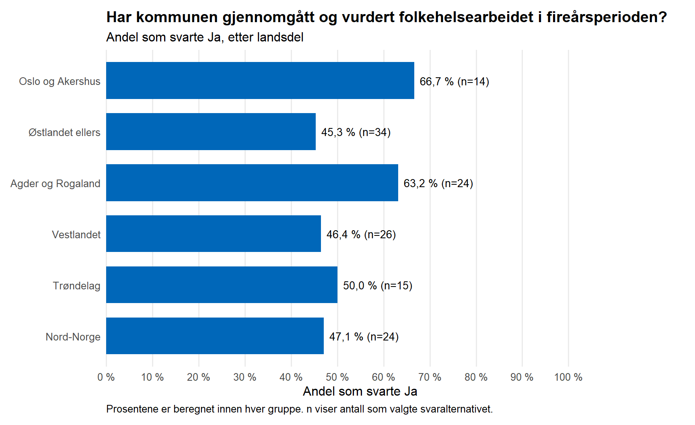
| landsdel | Svar | Antall kommuner | Prosent | Gyldige svar i gruppen |
|---|---|---|---|---|
| Oslo og Akershus | Ja | 14 | 66,7 % | 21 |
| Oslo og Akershus | Nei | 6 | 28,6 % | 21 |
| Oslo og Akershus | Vet ikke | 1 | 4,8 % | 21 |
| Østlandet ellers | Ja | 34 | 45,3 % | 75 |
| Østlandet ellers | Nei | 31 | 41,3 % | 75 |
| Østlandet ellers | Vet ikke | 10 | 13,3 % | 75 |
| Agder og Rogaland | Ja | 24 | 63,2 % | 38 |
| Agder og Rogaland | Nei | 10 | 26,3 % | 38 |
| Agder og Rogaland | Vet ikke | 4 | 10,5 % | 38 |
| Vestlandet | Ja | 26 | 46,4 % | 56 |
| Vestlandet | Nei | 21 | 37,5 % | 56 |
| Vestlandet | Vet ikke | 9 | 16,1 % | 56 |
| Trøndelag | Ja | 15 | 50,0 % | 30 |
| Trøndelag | Nei | 12 | 40,0 % | 30 |
| Trøndelag | Vet ikke | 3 | 10,0 % | 30 |
| Nord-Norge | Ja | 24 | 47,1 % | 51 |
| Nord-Norge | Nei | 22 | 43,1 % | 51 |
| Nord-Norge | Vet ikke | 5 | 9,8 % | 51 |
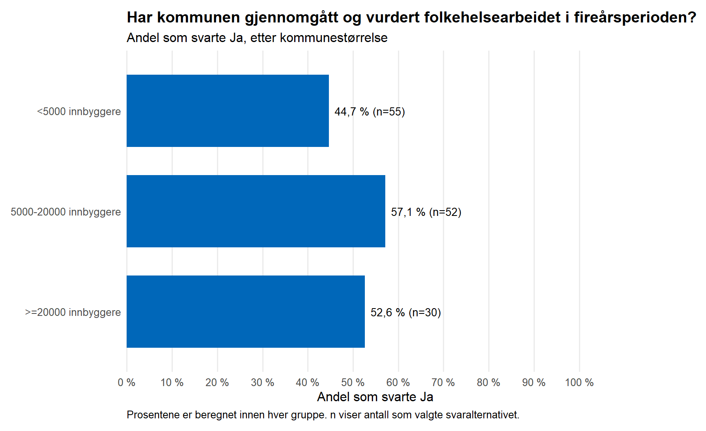
| liten | Svar | Antall kommuner | Prosent | Gyldige svar i gruppen |
|---|---|---|---|---|
| <5000 innbyggere | Ja | 55 | 44,7 % | 123 |
| <5000 innbyggere | Nei | 48 | 39,0 % | 123 |
| <5000 innbyggere | Vet ikke | 20 | 16,3 % | 123 |
| 5000-20000 innbyggere | Ja | 52 | 57,1 % | 91 |
| 5000-20000 innbyggere | Nei | 31 | 34,1 % | 91 |
| 5000-20000 innbyggere | Vet ikke | 8 | 8,8 % | 91 |
| >=20000 innbyggere | Ja | 30 | 52,6 % | 57 |
| >=20000 innbyggere | Nei | 23 | 40,4 % | 57 |
| >=20000 innbyggere | Vet ikke | 4 | 7,0 % | 57 |
9 Barrierer og utfordringer
| Barriere/utfordring | Antall kommuner |
|---|---|
| Kapasitet og personellressurser | 202 |
| Organisering og samordning | 161 |
| Forankring | 112 |
| Prioritering fra ledelsen | 78 |
| Kompetanse | 45 |
| Annet | 39 |
| barrierer systematisk folkehelsearbeid (antall) | Antall kommuner |
|---|---|
| 1 | 69 |
| 2 | 90 |
| 3 | 77 |
| 4 | 20 |
| 5 | 13 |
| 6 | 2 |
| Barriere/utfordring | Antall kommuner |
|---|---|
| Kapasitet og personellressurser | 204 |
| Organisering og samordning | 149 |
| Forankring | 100 |
| Prioritering fra ledelsen | 73 |
| Kompetanse | 52 |
| Annet | 29 |
| barrierer jobbe kunnskapsbasert og langsiktig (antall) | Antall kommuner |
|---|---|
| 1 | 78 |
| 2 | 93 |
| 3 | 72 |
| 4 | 15 |
| 5 | 11 |
| 6 | 2 |
10 Nasjonale resultater etter kommunekjennetegn
Undergrupper vises som sekundære analyser. Fastsett og dokumenter en publiseringsgrense før offentliggjøring.
## Etter landsdel
### Krav til oversikt ivaretatt
|landsdel | n| Ja_n| Prosent|
|:-----------------|--:|----:|-------:|
|Agder og Rogaland | 38| 35| 92.1 %|
|Vestlandet | 56| 53| 94.6 %|
|Nord-Norge | 51| 44| 86.3 %|
|Oslo og Akershus | 21| 21| 100.0 %|
|Østlandet ellers | 75| 70| 93.3 %|
|Trøndelag | 30| 26| 86.7 %|
### Interkommunalt samarbeid
|landsdel | n| Ja_n| Prosent|
|:-----------------|--:|----:|-------:|
|Agder og Rogaland | 38| 28| 73.7 %|
|Vestlandet | 56| 34| 60.7 %|
|Nord-Norge | 51| 25| 49.0 %|
|Oslo og Akershus | 21| 15| 71.4 %|
|Østlandet ellers | 75| 57| 76.0 %|
|Trøndelag | 30| 20| 66.7 %|
### Utfordringer drøftet i planstrategi
|landsdel | n| Ja_n| Prosent|
|:-----------------|--:|----:|-------:|
|Agder og Rogaland | 38| 34| 89.5 %|
|Vestlandet | 56| 45| 80.4 %|
|Nord-Norge | 51| 35| 68.6 %|
|Oslo og Akershus | 21| 19| 90.5 %|
|Østlandet ellers | 75| 56| 74.7 %|
|Trøndelag | 30| 21| 70.0 %|
### Arbeidet vurdert i fireårsperioden
|landsdel | n| Ja_n| Prosent|
|:-----------------|--:|----:|-------:|
|Agder og Rogaland | 38| 24| 63.2 %|
|Vestlandet | 56| 26| 46.4 %|
|Nord-Norge | 51| 24| 47.1 %|
|Oslo og Akershus | 21| 14| 66.7 %|
|Østlandet ellers | 75| 34| 45.3 %|
|Trøndelag | 30| 15| 50.0 %|
## Etter liten
### Krav til oversikt ivaretatt
|liten | n| Ja_n| Prosent|
|:---------------------|---:|----:|-------:|
|5000-20000 innbyggere | 91| 86| 94.5 %|
|>=20000 innbyggere | 57| 56| 98.2 %|
|<5000 innbyggere | 123| 107| 87.0 %|
### Interkommunalt samarbeid
|liten | n| Ja_n| Prosent|
|:---------------------|---:|----:|-------:|
|5000-20000 innbyggere | 91| 67| 73.6 %|
|>=20000 innbyggere | 57| 34| 59.6 %|
|<5000 innbyggere | 123| 78| 63.4 %|
### Utfordringer drøftet i planstrategi
|liten | n| Ja_n| Prosent|
|:---------------------|---:|----:|-------:|
|5000-20000 innbyggere | 91| 77| 84.6 %|
|>=20000 innbyggere | 57| 51| 89.5 %|
|<5000 innbyggere | 123| 82| 66.7 %|
### Arbeidet vurdert i fireårsperioden
|liten | n| Ja_n| Prosent|
|:---------------------|---:|----:|-------:|
|5000-20000 innbyggere | 91| 52| 57.1 %|
|>=20000 innbyggere | 57| 30| 52.6 %|
|<5000 innbyggere | 123| 55| 44.7 %|
## Etter sentralitetnavn
### Krav til oversikt ivaretatt
|sentralitetnavn | n| Ja_n| Prosent|
|:-------------------------------|--:|----:|-------:|
|Sentralitet: 4 (670-774) | 50| 48| 96.0 %|
|Sentralitet: 2 (870-924) | 20| 20| 100.0 %|
|Sentralitet: 5 (565-669) | 81| 73| 90.1 %|
|Sentralitet: 3 (775-869) | 42| 41| 97.6 %|
|Sentralitet: 6 (0-564) - lav | 73| 62| 84.9 %|
|Sentralitet: 1 (925-1000) - høy | 5| 5| 100.0 %|
### Interkommunalt samarbeid
|sentralitetnavn | n| Ja_n| Prosent|
|:-------------------------------|--:|----:|-------:|
|Sentralitet: 4 (670-774) | 50| 34| 68.0 %|
|Sentralitet: 2 (870-924) | 20| 14| 70.0 %|
|Sentralitet: 5 (565-669) | 81| 56| 69.1 %|
|Sentralitet: 3 (775-869) | 42| 32| 76.2 %|
|Sentralitet: 6 (0-564) - lav | 73| 42| 57.5 %|
|Sentralitet: 1 (925-1000) - høy | 5| 1| 20.0 %|
### Utfordringer drøftet i planstrategi
|sentralitetnavn | n| Ja_n| Prosent|
|:-------------------------------|--:|----:|-------:|
|Sentralitet: 4 (670-774) | 50| 41| 82.0 %|
|Sentralitet: 2 (870-924) | 20| 16| 80.0 %|
|Sentralitet: 5 (565-669) | 81| 63| 77.8 %|
|Sentralitet: 3 (775-869) | 42| 37| 88.1 %|
|Sentralitet: 6 (0-564) - lav | 73| 48| 65.8 %|
|Sentralitet: 1 (925-1000) - høy | 5| 5| 100.0 %|
### Arbeidet vurdert i fireårsperioden
|sentralitetnavn | n| Ja_n| Prosent|
|:-------------------------------|--:|----:|-------:|
|Sentralitet: 4 (670-774) | 50| 30| 60.0 %|
|Sentralitet: 2 (870-924) | 20| 11| 55.0 %|
|Sentralitet: 5 (565-669) | 81| 39| 48.1 %|
|Sentralitet: 3 (775-869) | 42| 23| 54.8 %|
|Sentralitet: 6 (0-564) - lav | 73| 32| 43.8 %|
|Sentralitet: 1 (925-1000) - høy | 5| 2| 40.0 %|Undergruppeforskjeller er deskriptive og bør ikke tolkes kausalt. Små grupper gir stor tilfeldig usikkerhet.
11 Datakvalitet og kontroll
|Kontroll | Antall|
|:---------------------|------:|
|duplikate_kommuner | 0|
|ugyldig_kommunenummer | 0|
|mangler_fylke | 0|
|mangler_landsdel | 0|
|mangler_folketall | 0|11.1 Filterkontroller
|Kontroll | Antall|
|:------------------------------------------|------:|
|Spørsmål 2 besvart uten gyldig svar på 1b | 0|
|Spørsmål 3b besvart uten Ja på 3a | 0|
|Spørsmål 6 besvart uten Ja på 5 | 0|
|Spørsmål 7b besvart uten Ja på 7a | 0|
|Spørsmål 9b eller 9c besvart uten Ja på 9a | 0|12 Metodenotat
- Analyseenhet: Kommune, forutsatt én gyldig besvarelse per kommune.
- Nasjonale estimater: Uvektet andel blant kommuner med gyldig svar som fikk spørsmålet.
- Flersvar: Nevneren er antall kommuner i relevant filterpopulasjon. Prosentene kan summere til mer enn 100.
- Filterspørsmål: Spørsmål 2 følger 1b; 3b følger 3a; 6 følger 5; 7b følger 7a; 9b og 9c følger 9a.
- Mangler: Skill mellom strukturelt manglende på grunn av filter, reelt ubesvart og ukjent kode.
- Vekting: Kommunevektede tall er hovedresultat når kommunen er analyseenheten. Befolkningsvektede tall svarer på hvor stor andel av befolkningen som bor i kommuner med et bestemt kjennetegn, og bør eventuelt vises separat.
- Frafall: Sammenlign svarere og ikke-svarere etter fylke, landsdel, kommunestørrelse og sentralitet dersom bruttoutvalget finnes.
- Personvern: Kontaktopplysninger og rå fritekst skal ikke publiseres.
13 Vedlegg A: Variabeldekning
|Variabel | Finnes|
|:-------------|------:|
|s_1 | TRUE|
|s_2 | TRUE|
|S_3 | FALSE|
|q16b | TRUE|
|q16 | TRUE|
|s_16_1 | TRUE|
|s_16_2 | TRUE|
|s_16_3 | TRUE|
|s_16_4 | TRUE|
|s_16_15 | TRUE|
|s_16_5 | TRUE|
|s_16_6 | TRUE|
|s_16_8 | TRUE|
|s_16_9 | TRUE|
|s_16_10 | TRUE|
|s_16_11 | TRUE|
|s_16_12 | TRUE|
|s_16_13 | TRUE|
|s_16_14_other | TRUE|
|q2_1 | TRUE|
|q2_2 | FALSE|
|q2_2_1 | TRUE|
|q2_2_2 | TRUE|
|q2_2_3 | TRUE|
|q2_2_4 | TRUE|
|s_7_1 | TRUE|
|s_7_2 | TRUE|
|s_7_3 | TRUE|
|s_7_4 | TRUE|
|s_7_5 | TRUE|
|s_7_6 | TRUE|
|s_7_7 | TRUE|
|s_7_8 | TRUE|
|s_7_9 | TRUE|
|s_7_10 | TRUE|
|s_7_11 | TRUE|
|s_7_12 | TRUE|
|s_7_13 | TRUE|
|s_7_14 | TRUE|
|s_7_15 | TRUE|
|s_7_16 | TRUE|
|s_7_17 | TRUE|
|s_7_18 | TRUE|
|s_7_19 | TRUE|
|s_7_20 | TRUE|
|s_7_21 | TRUE|
|s_7_22 | TRUE|
|s_7_23 | TRUE|
|s_7_24 | TRUE|
|s_7_25 | TRUE|
|s_29_1 | TRUE|
|s_29_2 | TRUE|
|s_29_3 | TRUE|
|s_29_4 | TRUE|
|s_29_5 | TRUE|
|s_29_6 | TRUE|
|s_29_7 | TRUE|
|s_29_8 | TRUE|
|s_29_9 | TRUE|
|s_29_10 | TRUE|
|s_29_11 | TRUE|
|s_29_12 | TRUE|
|s_29_13 | TRUE|
|s_29_14 | TRUE|
|s_29_15 | TRUE|
|s_29_16 | TRUE|
|s_29_17 | TRUE|
|s_29_18 | TRUE|
|s_29_19 | TRUE|
|s_29_20 | TRUE|
|s_29_21 | TRUE|
|s_29_22 | TRUE|
|s_29_23 | TRUE|
|s_29_24 | TRUE|
|s_29_25 | TRUE|
|q18 | TRUE|
|q19 | TRUE|
|q23_1 | TRUE|
|q23_2 | TRUE|
|q20_1 | TRUE|
|q20_2 | TRUE|
|q20_3 | TRUE|
|q20_4 | TRUE|
|q20_5 | TRUE|
|q20_6 | TRUE|
|q20_7 | TRUE|
|q20_8 | TRUE|
|q20_9 | TRUE|
|q20_10 | TRUE|
|q20_11 | TRUE|
|q20_12 | TRUE|
|q20_13 | TRUE|
|q20_14 | TRUE|
|q20_15 | TRUE|
|q20_16 | TRUE|
|q21 | TRUE|
|q21b | TRUE|
|q21b_1 | TRUE|
|q10a_1 | TRUE|
|q10a_2 | TRUE|
|q10a_3 | TRUE|
|q10a_4 | TRUE|
|q10a_5 | TRUE|
|q10a_6 | TRUE|
|q10a_6_other | TRUE|
|q10b_1 | TRUE|
|q10b_2 | TRUE|
|q10b_3 | TRUE|
|q10b_4 | TRUE|
|q10b_5 | TRUE|
|q10b_6 | TRUE|
|q10b_6_other | TRUE|
|q22 | TRUE|14 Vedlegg B: Kodekontroll for filtervariabler
|Variabel | Verdi| n|
|:--------|-------------------------------------:|---:|
|q16 | 2024| 114|
|q16 | | 86|
|q16 | 2023| 50|
|q16 | 2025| 34|
|q16 | Under utarbeidelse nå| 29|
|q16 | 2026| 18|
|q16 | 2022| 7|
|q16 | Har ikke utarbeidet et slikt dokument| 7|
|q16 | 2021| 5|
|q16 | 2020| 5|
|q16 | 2019| 2|
|q18 | Ja| 210|
|q18 | | 86|
|q18 | Vet ikke| 34|
|q18 | Nei| 27|
|q19 | Ja| 193|
|q19 | | 147|
|q19 | Nei| 9|
|q19 | Vet ikke| 8|
|q21 | Ja| 137|
|q21 | Nei| 102|
|q21 | | 86|
|q21 | Vet ikke| 32|
|q23_1 | Ikke aktuelt| 149|
|q23_1 | | 86|
|q23_1 | Nei| 49|
|q23_1 | Vet ikke| 45|
|q23_1 | Ja| 28|
|q2_1 | Ja| 179|
|q2_1 | Nei| 92|
|q2_1 | | 86|15 Vedlegg C: Sesjonsinformasjon
R version 4.6.1 (2026-06-24 ucrt)
Platform: x86_64-w64-mingw32/x64
Running under: Windows 11 x64 (build 26100)
Matrix products: default
LAPACK version 3.12.1
locale:
[1] LC_COLLATE=nb-NO.UTF-8 LC_CTYPE=nb-NO.UTF-8 LC_MONETARY=nb-NO.UTF-8
[4] LC_NUMERIC=C LC_TIME=nb-NO.UTF-8
time zone: Europe/Oslo
tzcode source: internal
attached base packages:
[1] stats graphics grDevices utils datasets methods base
other attached packages:
[1] highdir_0.6.1 knitr_1.52 scales_1.4.0 ggplot2_4.0.3
[5] data.table_1.18.4
loaded via a namespace (and not attached):
[1] generics_0.1.4 tidyr_1.3.2 stringi_1.8.9 lattice_0.22-9
[5] hms_1.1.4 digest_0.6.39 magrittr_2.0.5 evaluate_1.0.5
[9] grid_4.6.1 timechange_0.4.0 RColorBrewer_1.1-3 fastmap_1.2.0
[13] jsonlite_2.0.0 backports_1.5.1 highcharter_0.9.5 purrr_1.2.2
[17] rlist_0.4.6.2 cli_3.6.6 rlang_1.3.0 withr_3.0.3
[21] yaml_2.3.12 otel_0.2.0 tools_4.6.1 dplyr_1.2.1
[25] forcats_1.0.1 broom_1.0.13 curl_7.1.0 assertthat_0.2.1
[29] vctrs_0.7.3 R6_2.6.1 zoo_1.9-0 lifecycle_1.0.5
[33] lubridate_1.9.5 stringr_1.6.0 htmlwidgets_1.6.4 pkgconfig_2.0.3
[37] pillar_1.11.1 gtable_0.3.6 glue_1.8.1 quantmod_0.4.29
[41] haven_2.5.5 xfun_0.60 tibble_3.3.1 tidyselect_1.2.1
[45] rstudioapi_0.19.0 farver_2.1.2 htmltools_0.5.9 rmarkdown_2.32
[49] xts_0.14.3 labeling_0.4.3 compiler_4.6.1 S7_0.2.2
[53] TTR_0.24.4